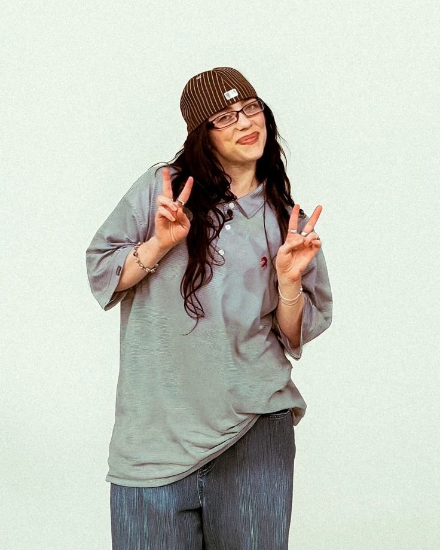
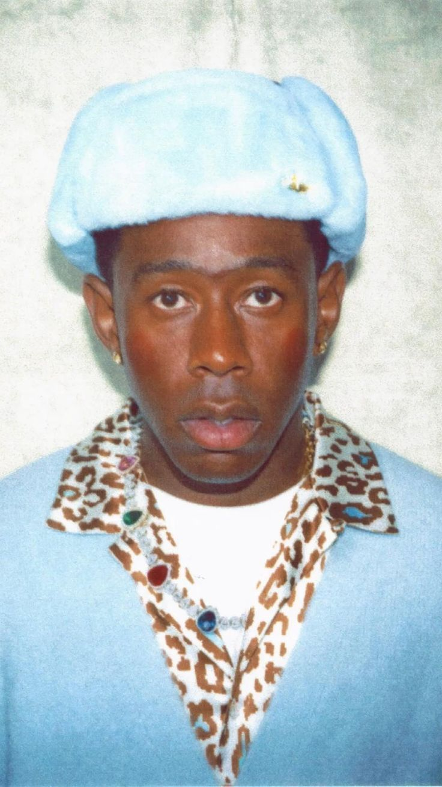
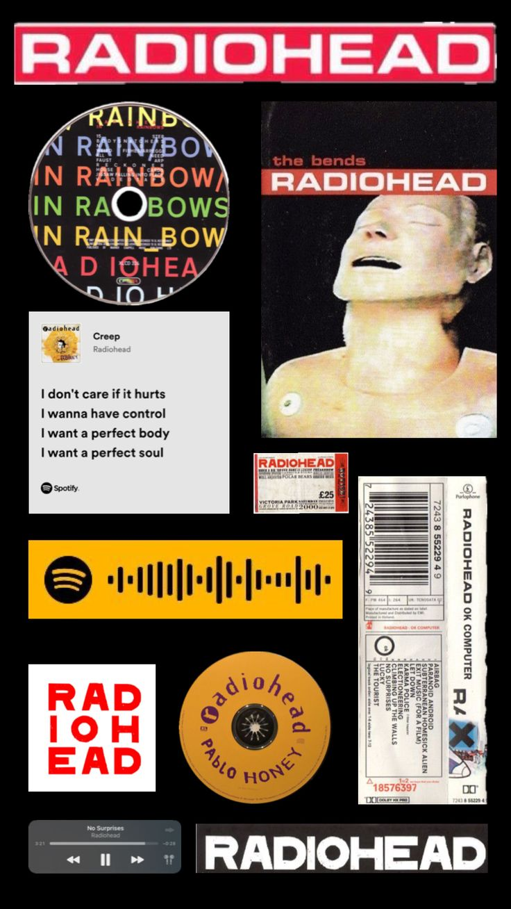
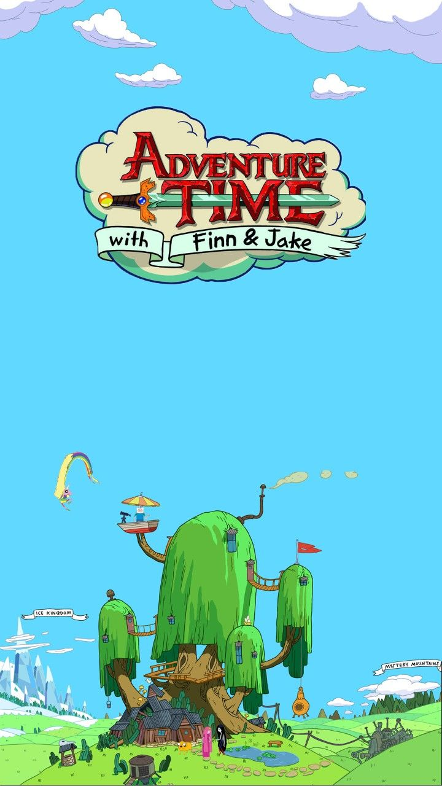

Meu nome é Davi Salvador Schubert, Tenho 15 anos e nasci e fui criado em Joinville. Tenho gostos bastante variados e adoro explorar diferentes formas de arte e entretenimento. Entre meus desenhos favoritos estão Hora de Aventura e Steven Universo, que admiro não apenas pela diversão e criatividade, mas também pelas histórias profundas e personagens cativantes que apresentam.
Considero-me uma pessoa extremamente eclética quando se trata de música, pois tenho uma curiosidade natural por explorar os mais diversos estilos e gêneros. Gosto de tentar de tudo, desde o pop, que consegue ser ao mesmo tempo leve e viciante, até o rap e o hip-hop, cheios de rimas inteligentes e batidas marcantes. Também aprecio o indie, com suas letras introspectivas e jazz.

Billie Eilish
Conhecido como Finn O Humano

Tyler, The Creator
Conhecido como Jake O Cachorro
Eminem
Conhecida como Marceline a Rainha Vampira

Radiohead
Conhecido como a Princesa Jujuba
Gosto de jogos que permitem explorar. Entre meus favoritos estão Minecraft, onde posso construir e explorar mundos infinitos; Pokémon, que mistura estratégia, aventura e colecionismo; e Roblox, que permite criar, jogar e interagir com diversos universos diferentes. Também sou fã de animações que misturam mistério, aventura, amizade e fantasia de uma maneira única. Adoro Hora de Aventura, que combina humor, fantasia e amizades inesquecíveis, e Gravity Falls, com seus mistérios intrigantes e personagens carismáticos. Também sou fã de Over the Garden Wall, que traz uma atmosfera única de aventura e fantasia sombria.
Minecraft
Minecraft é um jogo eletrônico sandbox de sobrevivência
Pokémon
Pokémon, abreviação do título japonês Pocket Monsters
Over The Garden Wall
Dois irmãos tentam achar o caminho de volta para casa enquanto viajam por uma terra misteriosa

Hora de Aventura
Dois irmãos tentam achar o caminho de volta para casa enquanto viajam por uma terra misteriosa
Antes de começar, deixe eu te explicar como funciona. Para publicar uma página no GitHub Pages, siga estes
passos:
Primeiro, crie um repositório público no GitHub. Depois, adicione seus arquivos, incluindo um
index.html. Em seguida, vá no repositório em Settings > Pages, selecione a branch
main e a pasta /(root), e clique em Save. Pronto!
Seu site estará disponível em:
https://SEU_USUARIO.github.io/NOME_DO_REPOSITORIO/